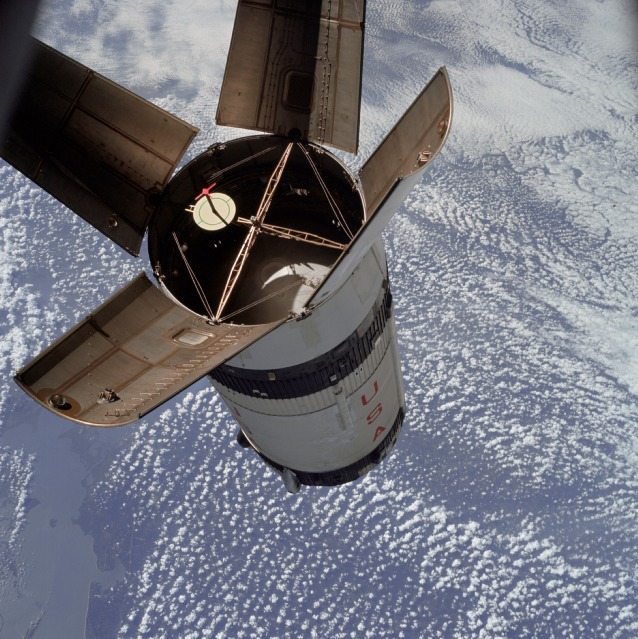

Apollo 7 was the first crewed mission of the Apollo program and the first time astronauts flew in an Apollo spacecraft. Launched on October 11, 1968, the mission marked NASA's return to human spaceflight after the Apollo 1 tragedy nearly two years earlier. The crew consisted of Commander Walter M. Schirra Jr., Command Module Pilot Donn F. Eisele, and Lunar Module Pilot Walter Cunningham.
The mission's primary purpose was to test the redesigned Apollo Command and Service Module in Earth orbit. Following the Apollo 1 fire, NASA had made hundreds of improvements to the spacecraft, and Apollo 7 would determine whether those changes were effective. The success of the mission was essential before NASA could attempt more ambitious flights to the Moon.
The Apollo 1 accident had led to one of the most extensive redesign efforts in NASA history. Engineers replaced flammable materials, improved electrical systems, and installed a new hatch that could be opened quickly during emergencies.
The Apollo 7 crew spent months training with the updated spacecraft. They carefully reviewed every system and procedure because the mission would serve as a crucial test of the vehicle that future lunar crews would rely upon.
Apollo 7 launched atop a Saturn IB rocket from Kennedy Space Center. The launch proceeded smoothly, and the spacecraft entered Earth orbit as planned. Over the next eleven days, the crew conducted a series of tests designed to evaluate the spacecraft's performance.
The astronauts tested navigation systems, propulsion systems, environmental controls, and communication equipment. They also performed rendezvous maneuvers with the rocket's upper stage, simulating procedures that would later be used during lunar missions.
One of the mission's most notable achievements was the first live television broadcast from an American crewed spacecraft. Millions of viewers watched as the astronauts demonstrated life and work in orbit.
Although the mission was successful, the crew faced several challenges. All three astronauts developed head colds while in orbit, making some tasks uncomfortable and creating concerns about pressure changes during reentry.
There were also occasional disagreements between the crew and mission controllers regarding schedules and procedures. Despite these tensions, the astronauts completed all major objectives and gathered valuable information about operating the spacecraft.
Apollo 7 demonstrated that the redesigned Apollo spacecraft was safe and capable of supporting human missions. Nearly every major system performed well, giving NASA confidence to proceed with plans for lunar flights.
The success of Apollo 7 restored public and organizational confidence in the Apollo program after the Apollo 1 disaster. Without this mission's success, later achievements such as Apollo 8's journey to the Moon and Apollo 11's lunar landing would not have been possible.